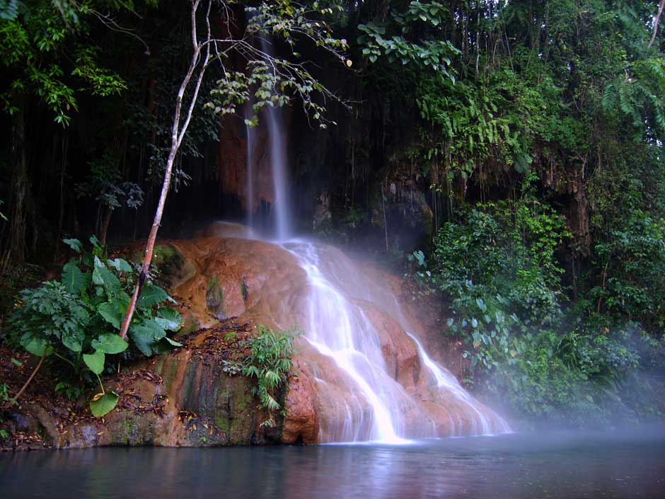
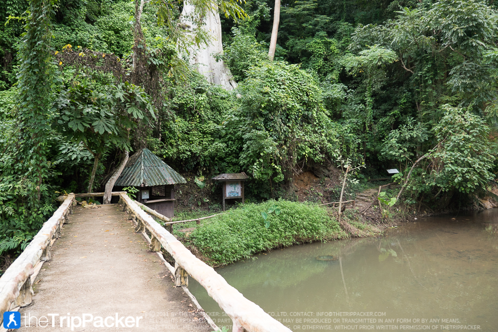

|
อุทยานแห่งชาติภูซาง


อุทยานแห่งชาติภูซาง ครอบคลุมพื้นที่บริเวณป่าน้ำหงาวฝั่งซ้าย ในท้องที่อำเภอเทิง จังหวัดเชียงราย ป่าน้ำเปี๋อยและป่าน้ำหย่วน และป่าน้ำลาว ในท้องที่อำเภอเชียงคำ กิ่งอำเภอภูซาง จังหวัดพะเยา มีเนื้อที่โดยรวมประมาณ 178,049.62 ไร่ ภายในอุทยานมีพื้นที่เป็นเทือกเขาสลับซับซ้อน มีเขตแดนติดกับสาธารณรัฐประชาธิปไตยประชาชนลาว สภาพป่าโดยรวมอุดมสมบูรณ์ เป็นป่าเบญจพรรณส่วนใหญ่ มีพืชพรรณหลากหลายชนิด พร้อมทั้งสัตว์ป่ามากมาย
สถานที่ท่องเที่ยวที่น่าสนใจของที่นี่ คือ "ภูชมดาว" เป็นจุดชมพระอาทิตย์ขึ้นที่สวยงามอีกแห่งหนึ่งของจังหวัดพะเยา สามารถมองเห็นทะเลหมอกและภูเขาสลับซับซ้อนมากมายได้ไกลสุดลูกหูลูกตา ยามเช้าพระอาทิตย์ดวงกลมโตจะค่อย ๆ โผล่ขึ้นมาจากสายหมอกและสะท้อนแสงสีทองลงสู่สายหมอกสีขาวอย่างสวยงาม อากาศเย็นสบาย บรรยากาศโดยรอบโรแมนติกเกินคำบรรยาย นอกจากนี้ยังมีสถานที่ท่องเที่ยวที่น่าสนใจอื่น ๆ อาทิ น้ำตกภูซาง, บ่อน้ำอุ่นภูซาง, ถ้ำน้ำลอด, ดอยผาดำ ฯลฯ
|